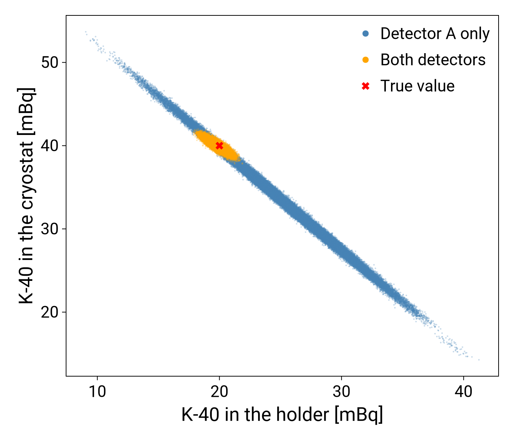
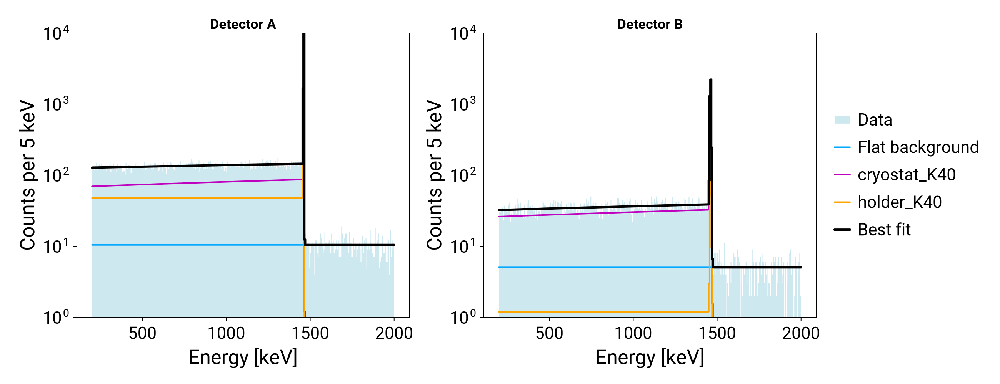

Tutorial: simultaneous fits
This tutorial fits the spectra of two detectors together, with the activities shared between them (see Simultaneous fits). It shows why this helps: two sources that one detector cannot tell apart are separated by the second one.
Two sources, two detectors
There is $^{40}$K in two places: in the holder of detector A, close to it, and in the cryostat, far from both detectors. In detector A both sources give almost the same spectrum, the 1461 keV line on its Compton continuum. Detector B is far from the holder and sees it much less, has a worse energy resolution and a shorter livetime. Each detector also has a flat background with its own parameter.
The simulated spectra are made up here: counts per decay in 5 keV bins, with a line of width sigma in keV on a continuum that rises with slope below it.
using Refit
using StatsBase
edges = 0.0:5.0:3000.0
energy = collect(edges[1:(end-1)]) .+ 2.5 # bin centres in keV
function k40_spectrum(efficiency, sigma, slope)
continuum = (1 .+ slope .* energy ./ 1461) .* (energy .< 1461)
line = exp.(-(energy .- 1461) .^ 2 ./ (2 * sigma^2))
shape = 0.7 .* continuum ./ sum(continuum) .+ 0.3 .* line ./ sum(line)
return Histogram(edges, efficiency .* shape)
end
components_a = Dict(
:holder_K40 => k40_spectrum(0.10, 1.5, 0.0),
:cryostat_K40 => k40_spectrum(0.08, 1.5, 0.3),
:bkg_a => (analytic = (E, p) -> p.bkg_a,),
)
components_b = Dict(
:holder_K40 => k40_spectrum(0.005, 3.0, 0.0),
:cryostat_K40 => k40_spectrum(0.06, 3.0, 0.3),
:bkg_b => (analytic = (E, p) -> p.bkg_b,),
)The two $^{40}$K components have the same names in both detectors, so they share their activities. The backgrounds have different names, so each detector has its own.
One model for each detector
Each detector has its own model, here with its own norm: the activities are in mBq and the livetimes are $10^7$ s for detector A and $5 \times 10^6$ s for detector B.
model_a, bin_edges_a = build_forward_model(components_a; e_low = 200, e_high = 2000, norm = 1e-3 * 1.0e7)
model_b, bin_edges_b = build_forward_model(components_b; e_low = 200, e_high = 2000, norm = 1e-3 * 5.0e6)The measured counts are drawn from a Poisson distribution around the prediction of each model for known parameters:
using Distributions
using Random
truth = (holder_K40 = 20.0, cryostat_K40 = 40.0, bkg_a = 2.0, bkg_b = 1.0)
Random.seed!(1)
counts_a = rand.(Poisson.(model_a(truth)))
counts_b = rand.(Poisson.(model_b(truth)))The likelihood of both spectra
The likelihood of each detector is built as usual. The likelihood of both is the sum of their logarithms:
using DensityInterface
likelihood_a = build_likelihood(counts_a, model_a)
likelihood_b = build_likelihood(counts_b, model_b)
likelihood_ab = logfuncdensity(p -> logdensityof(likelihood_a, p) + logdensityof(likelihood_b, p))Sampling
To see what detector B adds, the fit is done twice: with detector A only, and with both detectors. The ranges are given by hand here. With measured spectra, get_priors gives them for each detector, and a shared parameter keeps the widest.
using IntervalSets
using BAT
ranges = Dict(:holder_K40 => 0.0 .. 200.0, :cryostat_K40 => 0.0 .. 200.0, :bkg_a => 0.0 .. 10.0)
prior_a = build_prior_dist(ranges)
prior_ab = build_prior_dist(merge(ranges, Dict(:bkg_b => 0.0 .. 10.0)))
function run_fit(likelihood, prior)
algorithm = TransformedMCMC(
proposal = RandomWalk(),
strict = false,
burnin = MCMCMultiCycleBurnin(nsteps_per_cycle = 20_000, max_ncycles = 50),
nsteps = 10^5,
nchains = 4,
)
return bat_sample(PosteriorMeasure(likelihood, prior), algorithm).result
end
samples_a = run_fit(likelihood_a, prior_a)
samples_ab = run_fit(likelihood_ab, prior_ab)[ Info: MCMCChainPoolInit: trying to generate 4 viable MCMC chain state(s).
[ Info: Selected 4 MCMC chain state(s).
[ Info: Begin tuning of 4 MCMC chain(s).
[ Info: MCMC Tuning cycle 1 finished, 4 chains, 4 tuned, 0 converged.
[ Info: MCMC Tuning cycle 2 finished, 4 chains, 4 tuned, 4 converged.
[ Info: MCMC tuning of 4 chains successful after 2 cycle(s).
[ Info: Running post-tuning stabilization steps for 4 MCMC chain(s).
[ Info: Generate main samples using 4 MCMC chain(s).
[ Info: MCMCChainPoolInit: trying to generate 4 viable MCMC chain state(s).
[ Info: Selected 4 MCMC chain state(s).
[ Info: Begin tuning of 4 MCMC chain(s).
[ Info: MCMC Tuning cycle 1 finished, 4 chains, 4 tuned, 0 converged.
[ Info: MCMC Tuning cycle 2 finished, 4 chains, 4 tuned, 4 converged.
[ Info: MCMC tuning of 4 chains successful after 2 cycle(s).
[ Info: Running post-tuning stabilization steps for 4 MCMC chain(s).
[ Info: Generate main samples using 4 MCMC chain(s).Result
Each point is a sample of the posterior, for the activities of the two sources. With detector A only, the fit can trade one source for the other along a long band: only their sum is well known. Detector B sees the two sources in a different ratio, and together the two detectors fix both activities.
using LegendMakie
import Format
import CairoMakie
fig = CairoMakie.Figure(size = (700, 600))
ax = CairoMakie.Axis(
fig[1, 1];
xlabel = "K-40 in the holder [mBq]",
ylabel = "K-40 in the cryostat [mBq]",
)
for (samples, label, color) in
((samples_a, "Detector A only", :steelblue), (samples_ab, "Both detectors", :orange))
holder = [v.holder_K40 for v in samples.v]
cryostat = [v.cryostat_K40 for v in samples.v]
# small points, with a larger marker in the legend
CairoMakie.scatter!(
ax,
holder,
cryostat;
markersize = 3,
color = (color, 0.3),
label = label => (; markersize = 12, color),
)
end
CairoMakie.scatter!(
ax,
[truth.holder_K40],
[truth.cryostat_K40];
color = :red,
marker = :xcross,
markersize = 15,
label = "True value",
)
CairoMakie.axislegend(ax)
fig
The best fit and the smallest 68% interval of each activity, in mBq:
for (label, samples) in (("detector A only", samples_a), ("both detectors", samples_ab))
best = mode(samples)
intervals = map(first, BAT.smallest_credible_intervals(samples; p = 0.68, mode = :connected))
for name in (:holder_K40, :cryostat_K40)
low, high = round(intervals[name].left; digits = 1), round(intervals[name].right; digits = 1)
println(rpad(label, 17), rpad(name, 14), round(best[name]; digits = 1), " [", low, ", ", high, "]")
end
enddetector A only holder_K40 25.1 [20.6, 29.7]
detector A only cryostat_K40 33.5 [28.0, 39.3]
both detectors holder_K40 19.8 [19.4, 20.3]
both detectors cryostat_K40 40.0 [39.5, 40.5]The spectra of both detectors with the best fit of both, and its components:
best = mode(samples_ab)
fig = CairoMakie.Figure(size = (1300, 500))
for (i, (title, model, bin_edges, counts)) in enumerate((
("Detector A", model_a, bin_edges_a, counts_a),
("Detector B", model_b, bin_edges_b, counts_b),
))
ax = CairoMakie.Axis(
fig[1, i];
title,
xlabel = "Energy [keV]",
ylabel = "Counts per 5 keV",
yscale = log10,
)
CairoMakie.ylims!(ax, 1, 1e4)
hists = get_best_fit_histograms(best, model, bin_edges)
plot_hist!(ax, counts_to_histogram(counts, bin_edges); filled = true, alpha = 0.6, color = :lightblue, label = "Data")
for (name, h) in hists
name == :total && continue
# the backgrounds of both detectors under one label, for one legend
plot_hist!(ax, h; label = startswith(string(name), "bkg") ? "Flat background" : string(name))
end
plot_hist!(ax, hists[:total]; color = :black, linewidth = 3, label = "Best fit")
end
# one legend for both panels, which use the same colors
CairoMakie.Legend(fig[1, 3], fig.content[end]; framevisible = false)
fig